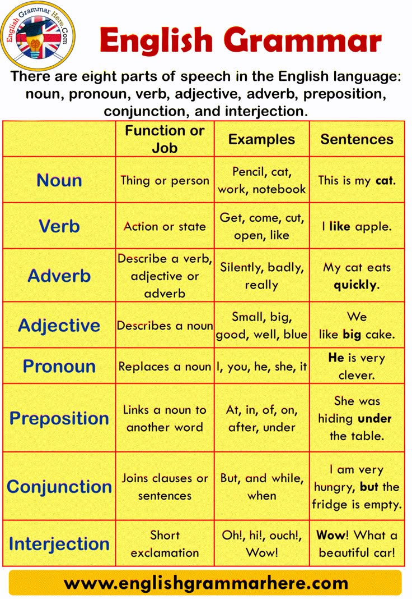

หลักไวยากรณ์และไวยากรณ์เชิงโครงสร้าง (Grammar and Syntax)

รายละเอียดการเรียนรู้: การศึกษากฎเกณฑ์และระบบระเบียบที่ใช้ในการประกอบคำเข้าด้วยกันเป็นประโยค เพื่อให้สารที่ส่งออกไปมีความแม่นยำ ไร้ความก้ำกึ่ง และเป็นไปตามมาตรฐานทางภาษา เจาะลึกองค์ประกอบ: Parts of Speech & Functions: หน้าที่และความสัมพันธ์ของคำประเภทต่างๆ (คำนาม คำกริยา คำคุณศัพท์ คำกริยาวิเศษณ์ ฯลฯ) ในโครงสร้างประโยค Tense, Aspect & Mood: ระบบกาลเวลา (อดีต ปัจจุบัน อนาคต), ลักษณะของการกระทำ (เสร็จสิ้น กำลังทำ ทำต่อเนื่อง), และมาลารูปแบบประโยค (เงื่อนไข การสมมติ การสั่ง) Syntax & Sentence Transformation: การเรียงลำดับคำในประโยค (Word Order) การสร้างประโยคความเดี่ยว ความรวม ความซ้อน การเปลี่ยนประโยคบอกเล่าเป็นประโยคคำถาม ประโยคปฏิเสธ หรือประโยคกรรมกร (Passive Voice)